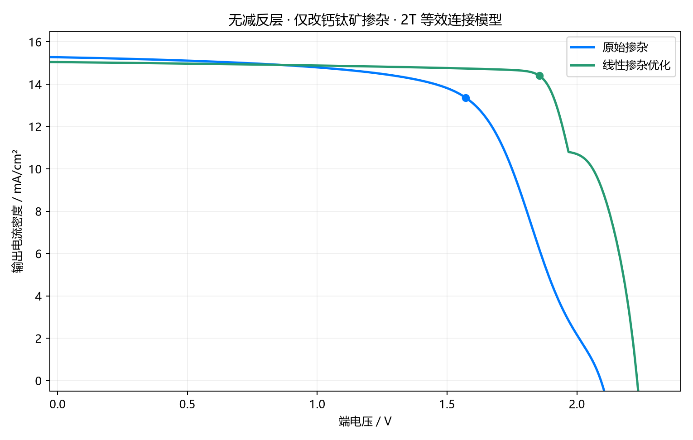
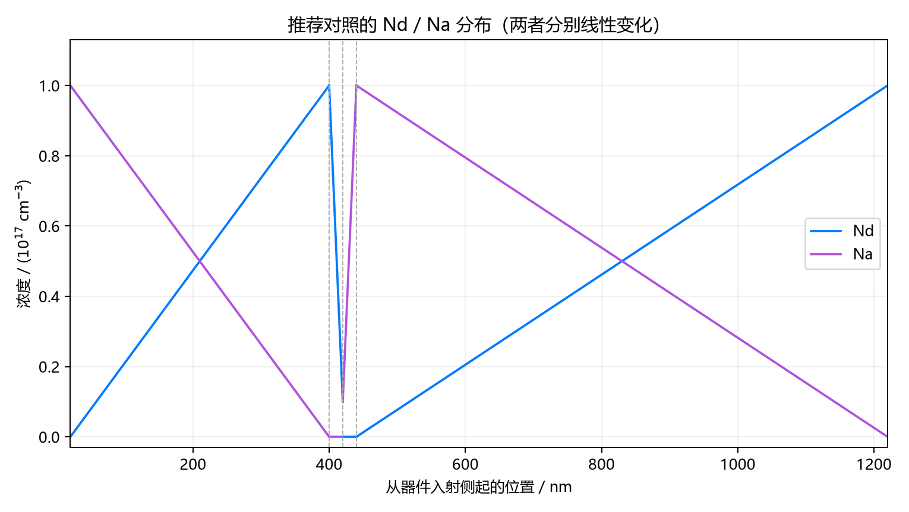
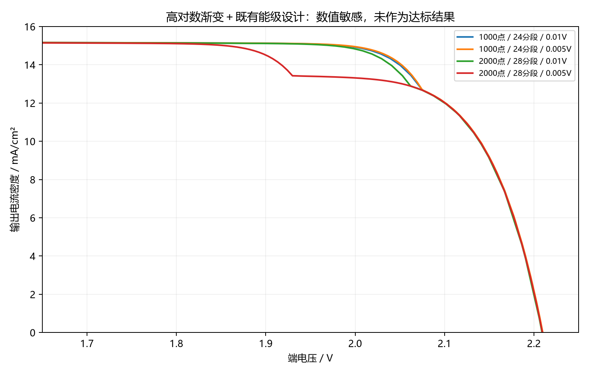

2026-11-16 · Perovskite Device Studio 1.5.1 · MK Design
结构适用范围更正：本报告改了两主吸收层掺杂，并反转了中间n/p梯度方向，偏离“仅中央高掺杂、向两侧降低”的原设计。26.7191%属于扩展结构及条件串联边界，不能作为原设计的成绩。历史数据保留；正确结构见中央高掺杂纠正重算。
21.001% → 26.719%
仅改变四个钙钛矿功能层的 Nd / Na 及其渐变方式，效率提高 5.719 个百分点。厚度、Eg、χ、电极功函数、迁移率、寿命、复合系数、n,k、光谱、入射功率和电路参数保持原值。本次未得到经过数值复核达到 30% 的方案。
| 结构 | Jsc / mA·cm⁻² | Voc / V | FF / % | PCE / % |
|---|---|---|---|---|
| 原始掺杂 | 15.273 | 2.093 | 65.709 | 21.001 |
| 推荐对照：线性掺杂渐变 | 15.043 | 2.232 | 79.570 | 26.719 |
同一 Jsc / Voc 下达到 30% 需要 FF≈89.34%，当前为 79.57%。掺杂优化主要提高电压和 FF，短路电流略降。

结构仍为 NiOx 20 / 宽带隙 380 / n 层 20 / p 层 20 / 窄带隙 780 / C60 40 nm；两主吸收层 Eg 分别为 1.78 / 1.25 eV。Nd、Na 均按各自端点线性变化，单位 cm⁻³：
| 层 | Nd 左→右 | Na 左→右 |
|---|---|---|
| 宽带隙 380 nm | 0 → 1e17 | 1e17 → 0 |
| n 层 20 nm | 1e17 → 1e16 | 0 → 0 |
| p 层 20 nm | 0 → 0 | 1e16 → 1e17 |
| 窄带隙 780 nm | 0 → 1e17 | 1e17 → 0 |

中间 n/p 接触端仍各为 1e16。相对原方案，靠吸收层一侧浓度更高，20 nm 缓冲层的浓度梯度方向也相应改变。输运层参数不变。入射侧仍为 Air，前光学占位层也是 n=1、k=0 的 Air/200 nm，背侧 Ag/100 nm；没有 SiO₂ 或其他减反膜。
推荐结果采用 2000 空间点、每渐变层 28 分段、0.005 V 步长。26 分段为 26.791%，0.01 V 步长为 26.735%；该组核对的变化小于 0.08 个百分点，不代表数学意义上的最终收敛证明。1000点/24分段/0.01V 为 27.031%，不采用该较粗结果作为主结论。
纯掺杂粗筛 226 个子电池条件，另以先前公布的能级设计作 62 个子电池条件对照，两类共得到 9824 组可组合粗筛曲线。能级对照把原能级设计里的减反膜完全移除。其 χ 与外接触功函数为额外设计变量，不能计为纯掺杂收益。粗筛允许有限光生重映射误差用于排名，所有最终重算都使用软件原有的 1% 总重映射、电流守恒和单调性门槛。
| 探索配置（未选作推荐结论） | Jsc | Voc | FF | PCE |
|---|---|---|---|---|
| 强对数渐变：1000点/24分段/0.01V | 15.234 | 2.227 | 83.144 | 28.213 |
| 能级＋对数渐变：1000点/24分段/0.005V | 15.279 | 2.210 | 88.555 | 29.901 |
| 同一能级＋对数渐变：2000点/28分段/0.01V | 15.273 | 2.209 | 87.973 | 29.682 |
| 同一能级＋对数渐变：2000点/28分段/0.005V | 15.270 | 2.209 | 82.658 | 27.887 |
能级＋对数渐变粗筛最高约 30.225%，重算和分辨率变化后没有保持。部分高掺杂候选因非单调曲线或原生数值溢出被拒绝，没有采用失败的部分曲线，也没有放宽软件接受门槛。强对数渐变结果仅作探索记录，不作为达到 30% 或器件结构优越性的证据。

纯掺杂子电池粗筛 · 纯掺杂组合粗筛 · 额外能级设计粗筛 · 完整重算汇总 · 细化结果 · 单因素分辨率核对 · 推荐方案核对
2T 多尺度模型：完整堆栈 TMM、两个子电池漂移扩散、共同电流串联；固定虚拟选择性内接触与 0.1 Ω·cm² 等效连接电阻，全局 Rs=0.3、Rsh=40000 Ω·cm²，Pin=100 mW/cm²，300–1100 nm。它不预测实际中间 n/p 接触是否形成有效隧穿或复合连接。
掺杂与真实材料缺陷、迁移率、Auger 复合、简并统计及组分变化的联动未在此次模型中标定。当前推荐值最高 1e17，为 Nc=Nv=3e18 的约 3.3%；高掺杂探索的上限为 3e17。钙钛矿 n,k 和 NiOx 的 PTAA 光学代理沿用原输入。所有结果都是既定模型的数值比较，不能直接当作实验效率预测。
参数库另收录推荐方案和同网格基准，历史结构未覆盖。完整原生 JSON（gzip）通过 v1.5.1 发布页的数据包 提供；曲线、参数、汇总、复现脚本在仓库本目录。报告及图片可离线查看。